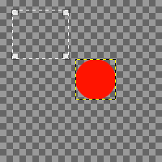
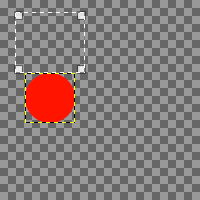
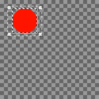
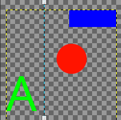
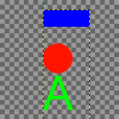
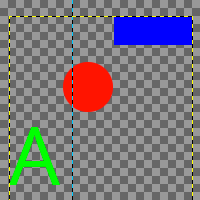
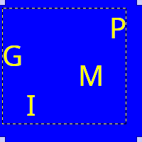
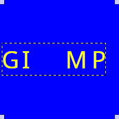
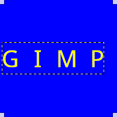

Use the Align and Distribute tool to line up layers or paths with each other, or to space them out. When this tool is selected, the mouse pointer turns to a small hand.
The Align setting determines what the reference object for alignment is. The Targets settings determine which objects will be distributed or aligned.
You use the buttons below the settings to select how you want your objects aligned or distributed.
There are different possibilities to activate the tool:
-
From the main menu: → → .
-
By clicking the tool icon in the Toolbox.
-
By pressing the Q keyboard shortcut.
Normally, tool options are displayed in a window attached under the Toolbox as soon as you activate a tool. If they are not, you can access them from the main menu through → → which opens the option window of the selected tool. The available tool options can also be accessed by double clicking the corresponding tool icon in the Toolbox.
- Targets
-
- Selected layers
-
When enabled, the layers, selected in the Layers Dialog, will be used as targets.
- Use extents of layer contents
-
When disabled, aligning and distributing happens based on the borders of the target layers. When enabled, it happens based on its content bounding box.
- Control point selection
-
The nine little squares display the available control points. You can change which one is selected by clicking on one of the squares. The selected control point determines what location on a target will be used for alignment or distribution.
By default, the center control point is selected. For alignment, this means that the center of each target is aligned with the reference. It depends on the chosen type of alignment which side of the reference is used to align with.
Choosing one of the other control points changes the point of alignment on the targets to one of the corners or edges instead of the center.
- Selected paths
-
When enabled, the paths, selected in the Paths Dialog, will be used as targets.
- Target guides
-
Guides, when selected, will also be used as targets. To select a guide as one of the targets, Alt-click on the guide. To add another guide, or to unselect a selected guide, use Alt+Shift-click on the guide. Selected guides are displayed in red instead of blue.
- Align
-
- Relative to:
-
In this drop-down list you select the reference, which is the object in your image the targets will be aligned with.
-
Image: the image is used as reference with which the target objects will be aligned.
-
Selection: the selection is used as reference with which the target objects will be aligned. If no selection is active, the image will be used instead.
![[Note]](images/note.png)
Note There is a known issue that choosing Selection in combination with Use extents of layer contents is not working correctly.
-
Picked reference object: The object to be used as source, relative to which the other chosen objects will be aligned. This can be a layer, a path or a guide.
You choose the reference object by clicking on the layer, path or guide in the image. It wil subsequently be shown with small squares in the corners.
The name of the active reference object is displayed below this setting. When no reference object has been picked yet, the align buttons will be disabled.
-
- Align buttons
-
These buttons become active when a reference object and one or more targets are selected.
-
Align the anchor points of the targets with the left edge of the reference.
-
Align the anchor points of the targets with the horizontal center of the reference.
-
Align the anchor points of the targets with the right edge of the reference.
-
Align the anchor points of the targets with the top edge of the reference.
-
Align the anchor points of the targets with the vertical center of the reference.
-
Align the anchor points of the targets with the bottom edge of the reference.
-
- Example 1
-
Figure 14.95. Example of aligning relative to a selection

An image with a transparent background layer, a small red circle layer, which is selected, and a selection. The selection is the reference object, as shown by the squares in the corners.
We want the red circle placed in the center of the selection.

We click to align the layer to the horizontal center of the selection.

Then we click to align the layer to the vertical center of the selection.
- Example 2
-
Figure 14.96. Example of aligning relative to a guide

An image with a transparent background layer, three small colored layers, which are selected, and a vertical guide, which is set as reference object, as shown by the squares at the top and bottom of the guide.
We want to align the left edges of the colored layers with the guide. We set the left edge anchor point as target location for alignment.

We click to align the left side of the layers to the guide.
- Distribute
-
- Distribute buttons
-
These buttons allow you to distribute the selected target objects evenly on your image. Each button uses a different way to do that distribution. You need a minimum of three selected targets to enable these buttons.
-
Distribute the targets horizontally, based on the selected anchor point.
-
Distribute the targets horizontally, with equal gaps between them.
-
Distribute the targets vertically, based on the selected anchor point.
-
Distribute the targets vertically, with equal gaps between them.
-
- Example 3
-
Figure 14.97. Example of distributing three layers with equal gaps
We use the same image as in example 2.

We want to distribute the colored layers with equal gaps between them, both horizontally and vertically.
We click to distribute the layers horizontally, and then to do the same vertically.
Figure 14.98. Align and Distribute Example

An image with four text layers and a background color layer. The text layers are all selected in the Layers dialog.
We want the text layers to be in the vertical center of the image, with equal space between each.

We click to vertically align the text layers relative to the image.

Then we click to distribute the text, with equal gaps between them.